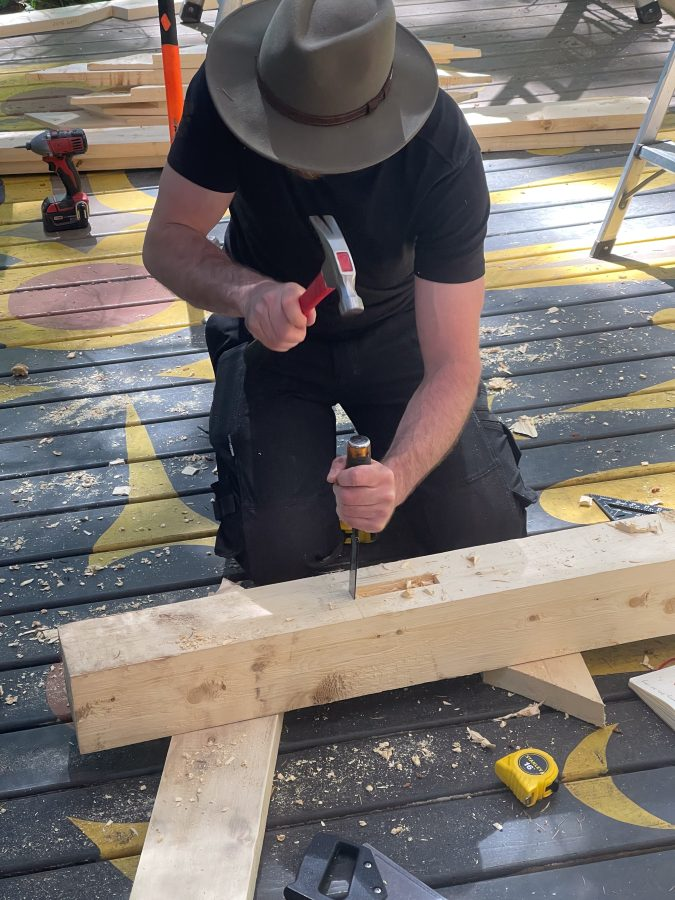
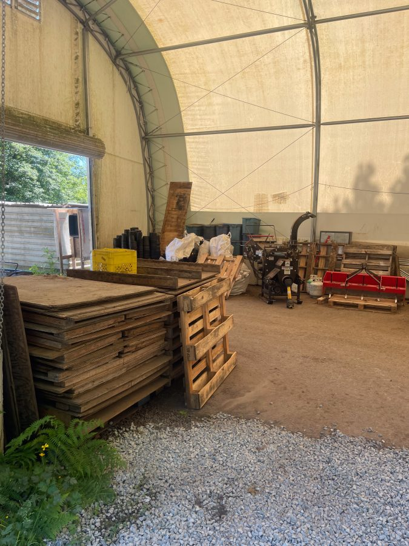
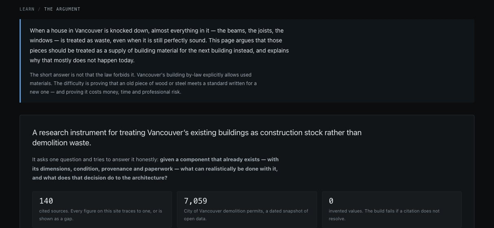

Unbuilding Vancouver's houses for the missing middle
Ruijie Liu, ARCH 548 Graduation Project I, Progress Review 1, 28 October 2026
I investigate how architectural design might change when buildings are understood as temporary material configurations whose components can be evaluated, salvaged and reassembled during Vancouver's transition toward denser housing.
Topic statement
A permanent object can only be destroyed.
Drawing: R. Liu with Astra 6. Excavator after “Excavator” by RhymOne (Sketchfab, CC BY 4.0) and lorry after “Cargo Truck” by J-Toastie (Poly Pizza, CC BY 3.0), rendered in the board camera and adapted; workers after Quaternius (CC0).
Buildings make about a third of the world's carbon.
UNEP / GlobalABC, Global Status Report for Buildings and Construction 2024/2025, 17 March 2025: 34% of global CO₂ emissions and 32% of energy; a sector headline, not a demolition-only share.
And about a third of what our region landfills.
Metro Vancouver, Construction and Demolition Waste: construction, renovation and demolition material is about a third of what goes to its landfill; 2022 waste composition study: wood and plastic are its largest parts. Drawing: R. Liu with Astra 6.
A home comes down every three hours.
Metro Vancouver average, ground-oriented dwellings, 2012–2022: 2,621 a year (Light House, A Blueprint for Change, 2023). 8,760 h ÷ 2,621 = 3.3 h.
We pay for the land; the house is a small fraction.
For half of Vancouver's detached houses in 2017, the building was below 7.5% of assessed value (Dahmen and von Bergmann, BC Assessment 2005–2015). +179,000 people in Metro Vancouver (census metropolitan area), 2016–2021 (Statistics Canada). Drawing: R. Liu with Astra 6.
Since 2023, one lot can hold six to eight homes, after a teardown.
City of Vancouver: R1-1 replaced nine RS zones, 17 Oct 2023; multiplex up to 1.0 FSR, 3–6 strata or 8 secured rental units (557 m² sites for 6–8). Before: house, suite and laneway home, 0.7 FSR. A multiplex is new construction (Low Density Housing Options guide, Dec 2025, p. 18). About 370 multiplex applications accepted by March 2025 (City memo, 29 May 2025). Drawing: R. Liu with Astra 6.
I share a house with several others to afford this city.
The quote is my own. A purpose-built two-bedroom rents for $2,363 a month on average (CMHC Rental Market Report, Dec 2025).
Why homes? They are the steadiest changers.
Stewart Brand, How Buildings Learn, 1994, ch. 1, “Flow”, after Sim Van der Ryn.
The question is being raised, in Vancouver and beyond.
Vancouver Green Demolition By-law 2014; Portland deconstruction ordinance 2016; Dahmen, von Bergmann and Das 2020; Lynch 2022; Cornell CCL 2022; Light House 2023; Unbuilders (trading status not confirmed); MIT Building Technology 2025. Images: City of Vancouver; portland.gov; IGI Global; Lynch 2022 (CC BY 4.0); Cornell AAP; Light House; MIT Architecture.
Layers change at different rates, and could leave at different times.
After Stewart Brand, How Buildings Learn, 1994: shearing layers and their rates. CMHC Materials Guide 2025, indicative supplier averages: interior paint about 10 years, fibre-cement cladding about 60, no figure for the frame. Salvage layer and drawing: R. Liu with Astra 6.
My work sits between assessment and design.
Lynch 2022; Lambec, Bastien-Masse and Fivet 2025 (EPFL; 21 procedures compared); Addis 2006; Gorgolewski 2008; ISO 20887:2020; Nielsen-Roine, Meyboom and Patel, Design for Deconstruction in Light Wood Frame, UBC 2025. Images: covers and first pages from each publisher; Lynch and Lambec under CC BY 4.0.
How should evidence from a real house change the next architecture?
Unresolved here, not a claim that nobody links salvage to design (Rose and Stegemann 2019; Cornell CCL 2022; Lambec et al. 2025).
What would it take to treat a house coming down as material for the next one?
ARCH 545A, directed study with Joanne Gates
people and materials: engagement and observation on site
ARCH 545B, directed study with Xun Liu
data: an online hub for salvaged parts
Both ended in one finding: a reuse decision framework.
One question, followed two ways.
Directed studies, UBC SALA, summer 2026.


Watching materials move, then joining them by hand.
ARCH 545A, directed study with Joanne Gates, Architect AIBC, lecturer, UBC SALA. Materials Lab: samples donated by local suppliers for exhibition and teaching, sorted by work-learn students. Material Immersion, summer course at UBC Farm, 2026: 25 students in two teams of 12 and 13; R. Liu, teaching assistant. Photos: R. Liu.
A Song eight-puzuo bracket set (八铺作), 111 parts, a teaching model · drag to turn
Print the 85-part model on MakerWorld ↗Short pieces, joined, carry the roof, and come apart again.
UNESCO Tentative List submission, 2013: built 1056, about 67 m high, over 15,400 timber elements. Liang Ssu-ch'eng (Liang Sicheng), A Pictorial History of Chinese Architecture, ed. W. Fairbank, 1984; Liang and Lin Huiyin's Shanxi surveys for the Society for Research in Chinese Architecture, 1930s. Bracket set on screen: original, unmeasured teaching model by R. Liu with Astra 6, after the Yingzao Fashi (1103) and two Bilibili assembly studies (BV1Kg1TYJEDd, BV1WX4y127Pq). Printed model: 宋式八铺作斗拱 by user_3800505495, MakerWorld, Standard Digital File License, personal printing.

A prototype: every function works; the users are hypothetical.
What it showed: the by-law allows used materials; the barrier is proving an old part meets a standard written for a new one.
This summer, the hub online.
ARCH 545B, directed study with Assistant Professor Xun Liu, UBC SALA, 2026. Website: ruijieliuthesis.netlify.app, a working prototype with hypothetical users. Vancouver Building By-law 14343, Book I, Div. A, 1.2.2.3: used materials permitted when they meet the requirements for new ones. Reuse network: 45 businesses across Cascadia.
One question: can this part do this job, in this building?
Reuse Decision Framework: the outcome of both directed studies, ARCH 545A with Joanne Gates (observation on site) and ARCH 545B with Xun Liu (the online research database); report pp. 28–35: twelve criteria (A–L), ranked with Joanne Gates for climate resilience; a material reuse passport, five levels of assessment, eight decisions. Supports design research; does not replace engineering, testing or code review.
Demolition fills the house neighbourhoods.
City of Vancouver open data, issued building permits typed "Demolition / Deconstruction": 7,168 permits, 3 Jan 2017 to 22 Oct 2026, fetched 24 Oct 2026. Each dot is one permit; downtown, the West End, Fairview and Strathcona hold under 3% of them.
Most permits ask for little, or nothing.
Tier parsed from permit text, so counts are a floor: 3,831 none stated (53%), 2,651 at 75% (pre-1950, 37%), 686 at 90% (character houses, 10%). Green Demolition By-law No. 11023. Chart: R. Liu with Astra 6.
Recycled by weight is not reused.
City of Portland BPS, Deconstruction Program, Sept 2025 (per project, about 4 t reused and 19 t to recovery; foundations excluded); Oregon DEQ 2019, 36 homes, about a quarter salvaged. Vancouver's by-law counts reuse and recycling together by weight. Chart: R. Liu with Astra 6.
Wood first: even by hand, most of the lumber was burned.
City of Vancouver, Deconstruction case study: Dunbar (a 1930 house, taken apart in 17 days in 2019): concrete 39,520 kg, crushed for road fill; lumber 19,220 kg (framing and boards; most pre-1950 homes are old growth, per the case study and Teshnizi 2015), 25% reused, 74% to waste-to-energy, 1% landfill (“lumber shorter than 4' can only be recycled”); 21% reused and 77% recycled overall, so burned lumber counted as recycled; flooring 5,549 kg, 85% reused; plaster 3,090 kg, recycled; fixtures reused through Habitat for Humanity. Metro Vancouver, 2022 Construction and Demolition Waste Composition Study (Dillon, 2023): wood of all kinds is 48% by weight of the 372,000 t disposed of in 2021. Joint: schematic, dowel-laminated, no glue. Chart: R. Liu. More on print 3, Why wood first.
The obstacle is time, and much of it doesn't need the site.
Catherine Commons, Ithaca, January 2022 (Heisel et al. 2023, Tables 3–4): 447.5 h on site over five days plus 96 h off site; demolition estimated at 48 h. Not a Vancouver forecast. Chart: R. Liu with Astra 6.
Others do single steps; none does them in one public place.
Precedent survey, 26 Oct 2026: Habitat for Humanity Greater Vancouver ReStore locations; Lynch 2022 (29 providers, “decentralized and loosely organized”); ReBuilding Center, Portland; Seattle Public Utilities Salvage Lumber Warehouse (opened May 2026); Rotor DC, Brussels; Bauteilbörse Basel; baubüro in situ, K.118, Winterthur 2021. Regrading: Teshnizi 2015, UBC SEEDS. City of Vancouver, Council report, 16 May 2018; Rebuild Hub: Habitat for Humanity Greater Vancouver, 9 Oct 2020, and City of Vancouver, “Reducing construction and demolition waste” (read 26 Oct 2026); ReStore locations, habitatgv.ca (read 26 Oct 2026). Row photos from each organisation; Rotor DC by Pascal Broze; K.118 by Martin Zeller.
A deconstruction hub, itself built to come apart.
Program diagram, schematic: first thoughts on the programme and its range, not a layout; no operator, site or intake agreement exists yet. Lorry: "Cargo Truck" by J-Toastie, Poly Pizza, CC BY 3.0, rendered and adapted (box removed, deck and panels added). Workers: Quaternius, CC0. Silhouettes: rawpixel, CC0.
Hubs go where houses come down and multiplexes go up.
City of Vancouver open data: house demolition permits 2017–2026 (6,236), new multiplex permits since 2024 (616), zoning districts, truck routes; Statistics Canada 2021 Census by dissemination area. Sites chosen by greedy coverage within 1.5 km of industrial (I, M, IC, MC) or commercial-arterial (C-2, C-3A) land within 200 m of a truck route: rule-based candidates, not selected properties. Why six, from a capacity estimate, and the method: print 4, Where hubs go.
Half workshop, half community centre: reuse first.
Building type, schematic: no building is chosen. Low buildings: City of Vancouver building footprints 2009 (the last set with heights), 600 m² or more, 12 m or less, on industrial or commercial-arterial land within 400 m of each candidate site, and confirmed standing in the City's 2026 property assessment with no demolition permit since 2016 (46 of 51 found). Kinds of building to look for, not properties for sale. Whole-hub size: the ReBuilding Center's 30,000 sq ft store, Portland. Options and reasons: print 5, What kind of building. Lorry: J-Toastie, CC BY 3.0; workers: Quaternius, CC0; silhouettes: rawpixel, CC0.
What it brings: resilience in time, climate and material.
Design intentions to test, not results. Timber detailing informed by the pagoda study (Yingxian Pagoda, Shanxi), not copied from it. Drawing: R. Liu with Astra 6.
Two tracks, six checkpoints, one hub.
ARCH 548 syllabus, fall 2026: Site and Program due 18 Nov, Progress Review 2 on 2 Dec, GP I booklet due 18 Dec. GP II interim and final follow the pattern of the GP guidelines (late February, late April); dates to confirm. A working plan, open until settled with my chair: no house is selected and no site access is secured yet. Covers: Viking, 1994; Park Books, 2022.
Architecture, we imagine, is permanent.
Almost no buildings adapt well.
- They're designed not to adapt;
- also budgeted and financed not to,
- constructed not to,
- administered not to,
- maintained not to,
- regulated and taxed not to,
- even remodeled not to.
But all buildings (except monuments) adapt anyway, however poorly, because the usages in and around them are changing constantly.
Stewart Brand, How Buildings Learn, 1994, ch. 1, “Flow”.
Thank you.
Works cited in this presentation, A to Z
Addis, Bill. Building with Reclaimed Components and Materials. Earthscan, 2006.
baubüro in situ. K.118, Kopfbau Halle 118, Winterthur, for Stiftung Abendrot, 2021.
Bauteilbörse Basel. Reuse depot, Basel, since 1995.
Brand, Stewart. How Buildings Learn: What Happens After They’re Built. Viking, 1994.
CMHC / Ha/f Climate Design. Housing Design Catalogue: Materials Guide. August 2025.
CMHC. Rental Market Report. 11 December 2025.
City of Portland, BPS. Deconstruction Program data, September 2025.
City of Vancouver. Building By-law No. 14343, Book I, Division A, 1.2.2.3 (used materials).
City of Vancouver. Green Demolition By-law No. 11023, consolidated 9 December 2025.
City of Vancouver. Low Density Housing Options How-to Guide, December 2025; R1-1 District Schedule.
City of Vancouver. Council report on a deconstruction hub (Innovation Fund), 16 May 2018.
City of Vancouver. “Reducing construction and demolition waste”, accessed 26 October 2026.
City of Vancouver. Deconstruction case study: Dunbar (a 1930 house, taken apart in 2019); “Deconstruction”, accessed 27 October 2026.
City of Vancouver Open Data. Issued building permits; local areas; zoning districts; truck routes; community centres; rapid transit stations; City-owned properties; building footprints 2009 and 2015. Fetched 24–26 October 2026.
Cooper, Marshall and Yaron. A Blueprint for Change. Light House Sustainability Society, 2023.
Cornell Circular Construction Lab. Catherine Commons; Circulating Matters, 2022. Heisel et al. 2023.
Dahmen, von Bergmann and Das. "Teardown Index." In Examining the Environmental Impacts of Materials and Buildings, IGI Global, 2020.
Gorgolewski, Mark. "Designing with Reused Building Components." Building Research & Information 36(2), 2008.
Habitat for Humanity Greater Vancouver. ReStore locations, accessed 26 October 2026; “The Rebuild Hub”, 9 October 2020.
Institute of Constructive Design, ZHAW (Stricker, Brandi, Sonderegger et al., eds.). Re-Use in Construction: A Compendium of Circular Architecture. Park Books, 2022.
ISO 20887:2020. Design for Disassembly and Adaptability.
Lambec, Bastien-Masse and Fivet. "Procedures Used to Determine the Reuse Potential of Building Elements." Frontiers in Built Environment 11, 2025.
Liang Ssu-ch'eng (Liang Sicheng). A Pictorial History of Chinese Architecture. Ed. Wilma Fairbank. MIT Press, 1984.
Liu, Ruijie. The Constructed Quarry. Directed studies, UBC SALA, 2026; ruijieliuthesis.netlify.app.
Lynch, Nicholas. "Unbuilding the City." Environment and Planning A 54(8), 2022.
Meyboom, AnnaLisa, and Kaia Nielsen-Roine. “Reuse of Wood Construction and Demolition Waste: Potentials for Canada.” Canadian Architect, 1 April 2025.
Metro Vancouver. Construction and Demolition Waste; 2022 Construction & Demolition Waste Composition Study, Dillon Consulting, October 2023.
MIT Building Technology. Wade, Berglund-Brown and Ochsendorf, demolition trends for structural reuse (MSRP); Build Reuse conference report, 2025.
Nielsen-Roine, Kaia, AnnaLisa Meyboom and Hemi Patel. Design for Deconstruction in Light Wood Frame. Guidebook, UBC, January 2025.
Nunes / Oregon DEQ. Deconstruction and demolition comparison, 36 Portland homes, 2019.
ReBuilding Center, Portland. What we do; deconstruction services closed 2019.
Rose and Stegemann. "Characterising Existing Buildings as Material Banks." Engineering Sustainability 172(3), 2019.
Rotor DC, Brussels. About us; Rotor, stories.
Schröder, Cappeller, Diesch and Scaffidi. Circular Design: Towards Regenerative Territories. Jovis, 2023.
Seattle Public Utilities and Earthwise. Salvage Lumber Warehouse, opened 1 May 2026 (KUOW, 2026).
Statistics Canada. 2021 Census Profile by dissemination area; 2021 cartographic boundaries.
Teshnizi, Z. Opportunities and Barriers for Reuse of Salvaged Dimensional Lumber. UBC SEEDS, 2015.
UNEP / GlobalABC (Global Alliance for Buildings and Construction). Global Status Report for Buildings and Construction 2024/2025. 17 March 2025.
UNESCO Tentative List. Wooden Pagoda of Yingxian County, 2013.
Unbuilders, Vancouver (company claims are its own; trading status not confirmed).
Source images on slides 11, 13, 25 and 30 (covers, first pages, photos) come from the publishers and organisations named there and are shown for teaching use; Lynch 2022 and Lambec et al. 2025 are open access under CC BY 4.0.
Models, adapted and rendered in the board camera: “Excavator” by RhymOne, Sketchfab, CC BY 4.0; “Cargo Truck” by J-Toastie, Poly Pizza, CC BY 3.0; construction worker by Quaternius, Poly Pizza, CC0.
Drawings by the author; slides 3, 5, 7, 8, 12, 21, 22, 24 and 29 drawn with Astra 6 (gpt-6-astra) to the author's brief; figure kits Hairline (MIT) and Anatomy (MIT); GSAP 3.12.5; three.js r149; Archivo (OFL).
References. Not presented.
Pin-up prints, ARCH D (24 × 36 in), vector PDF, in the order the talk reaches them
Checking the server.